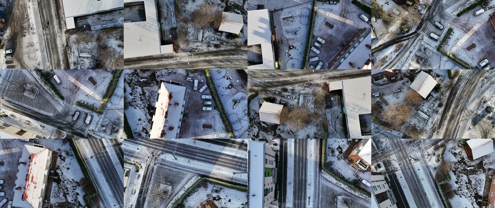

Gausser drone mapping: first georeferenced orthophoto
2026-11-14 · DJI Mini 4 Pro nadir video over Niemenranta, Tampere · scene ~/Desktop/straight_down/map
Changelog
- frames --overlap PERCENT: mapping frame selection from a nadir video, a frame whenever the next would share only that much of the view; no frame-count limits.
- GPS for video frames: a DJI
.SRTsubtitle file gives every picked frame its position, written into the frame's EXIF without re-encoding (geo.py). - Georeferenced solve: with GPS, COLMAP matches GPS neighbours (
spatial), maps with the global mapper (GLOMAP) and the model is fitted onto the GPS in EPSG:3067 (Finland) or UTM;sparse/geo.jsonholds CRS and origin. - gausser map: orthophoto and DSM as Cloud Optimized GeoTIFFs, rendered straight down from the trained splat, plus
map.htmlover satellite/OSM (mapping.py);run --map. - Fix: every COLMAP matcher segfaulted (Homebrew faiss 1.16 under the colmap 4.2.1_4 bottle); rebuilt colmap from source.
- Clean-up: one COLMAP binary-model reader (
colmap_model.py) replaces four copies in monitor, orbit, composite and arkit; solve's three model moves share one helper. - New project:
~/Developer/waypoint-burnerplans DJI Fly waypoint missions and writes them onto the RC 2 (second agent; untested on the drone).
Map: the orthophoto on the city map
Surface model (DSM)

Height of the splat surface per cell, coloured low (cyan) to high (pink) and hill-shaded. Roofs, the trees
and the street level separate clearly; flat ground looks grainy because the splat surface varies by a few centimetres,
which the shading exaggerates. Relative heights come from the photos and are good. The absolute level is not:
it inherits the drone's abs_alt, which puts the ground at about 303–310 m, while the real ground here is about
100 m above sea level. A ground control point or a known height would fix the offset.
Files: runs/map/<time>/dsm.tif (float32, NaN = no data) and ortho.tif (RGBA), both COG in EPSG:3067.
The flight, reviewed

12 of the 81 picked frames. Sharp, evenly exposed, camera straight down.
| Length | 110 s of 4K 30p video, 81 frames picked at 80% overlap |
|---|---|
| Height | 46.4–49.8 m above take-off |
| Camera | gimbal -90° to -89.4° (straight down all the way) |
| Exposure | shutter 1/555 s or faster, ISO ≤ 100: no motion blur |
| Pattern | 4 passes in a zigzag, ~85 × 65 m; turns bank up to 17° |
| Angles | nadir only, no crosshatch or oblique pass |
What to change next time
- Parallel lines, not a zigzag. The four passes crossed at angles, and at the turns the view swings fast. Fly straight parallel lines 20–25 m apart at 50 m; the waypoint planner draws them.
- Add a crosshatch or a −45° pass. Straight-down only lets the model bend into a shallow bowl; obliques also give walls for the splat.
- Fly the whole area plus a margin. The map is only as wide as the strip the camera saw; the edges get one or two views and come out soft.
- Snow and low sun leave white and shadow areas with little texture; overcast midday or no snow gives COLMAP more to match.
- Keep Video Subtitles on in DJI Fly: the
.SRTis what puts the map in place.
Why it now registers every frame
| Mapper | Frames placed | Time | Cameras vs GPS (RMS) |
|---|---|---|---|
COLMAP incremental mapper | 41 / 81 | ~10 min | 1.16 m horizontal |
COLMAP global_mapper (GLOMAP), now used with GPS | 81 / 81 | 1.5 min | 0.28 m horizontal, 0.44 m vertical |
A nadir flight is a near-planar scene seen from one side; the incremental mapper kept failing to add the second and fourth pass. The global mapper solves all rotations and positions at once and placed every frame. The GPS fit then dropped 6 of 81 positions as outliers (more than 3× the median distance).
Waypoint planner and burner (new project)
~/Developer/waypoint-burner, built by a second agent (Sonnet 5.5): plan writes a DJI Fly WPML mission
(KMZ) and a preview for photo or video capture, with the camera's long side across the track, oblique passes run past the area,
and splits at 200 waypoints or one battery; burn backs up the placeholder mission on the RC 2 and replaces its KMZ
over MTP (libmtp). 44 tests pass. Not yet verified: DJI Fly accepting the files, and a real burn. Nothing committed.
What changed, where
The working tree also holds earlier uncommitted iPhone LiDAR (arkit) work from 2026-11-09; the diff below includes it.
AGENTS.md | 35 ++++++++++- README.md | 61 ++++++++++++++++-- pyproject.toml | 9 +-- scripts/install-macos.sh | 2 +- src/gausser/align.py | 4 +- src/gausser/cli.py | 64 ++++++++++++++++--- src/gausser/composite.py | 40 +++--------- src/gausser/guide.py | 11 +++- src/gausser/keyframes.py | 29 +++++++-- src/gausser/monitor.py | 59 ++++-------------- src/gausser/orbit.py | 31 +++------ src/gausser/pano.py | 11 +--- src/gausser/scene.py | 33 ++++++++++ src/gausser/steps.py | 159 +++++++++++++++++++++++++++++++++-------------- tests/test_gausser.py | 72 ++++++++++++++++++--- tests/test_keyframes.py | 19 ++++++ 16 files changed, 444 insertions(+), 195 deletions(-)
src/gausser/geo.py (new, 225 lines)
"""GPS of photos and drone video frames.
DJI drones write a subtitle file next to each video when "Video Subtitles" is on in DJI Fly
(<video stem>.SRT): one block per frame with its time in the video and the drone's position, e.g.
``[latitude: 61.498123] [longitude: 23.763456] [rel_alt: 50.000 abs_alt: 160.123]``. `frames` reads
it and writes each extracted frame's position into the frame's EXIF GPS tags, so video frames carry
their position the same way drone photos do, and COLMAP reads it from there.
`solve` georeferences a model whose images have GPS: it fits a similarity from the COLMAP camera centres
to their GPS positions in a projected CRS (EPSG:3067 in Finland, else the UTM zone) and moves the model
there. Coordinates stay small and in gausser's axes: x = east, y = down, z = north, in metres from the
origin in sparse/geo.json, so (E, N, H) = origin + (x, z, -y).
"""
from __future__ import annotations
import bisect
import re
from dataclasses import dataclass
from pathlib import Path
from typing import Any
from .scene import GausserError
_TIME = re.compile(r"(\d+):(\d+):(\d+)[,.](\d+)\s*-->")
_LAT = re.compile(r"latitude\s*:\s*(-?[\d.]+)", re.I)
_LON = re.compile(r"longitude\s*:\s*(-?[\d.]+)", re.I)
_ABS = re.compile(r"abs_alt\s*:\s*(-?[\d.]+)", re.I)
_REL = re.compile(r"rel_alt\s*:\s*(-?[\d.]+)", re.I)
_GPS = re.compile(r"GPS\s*\(\s*(-?[\d.]+)\s*,\s*(-?[\d.]+)\s*,\s*(-?[\d.]+)") # older DJI: GPS(lon, lat, alt)
@dataclass
class Track:
"""A video's positions: time in seconds from the video's start, degrees, metres."""
source: Path
times: list[float]
points: list[tuple[float, float, float]] # latitude, longitude, altitude
def at(self, time: float) -> tuple[float, float, float]:
"""The position at `time`, linear between samples, held at the ends."""
i = bisect.bisect_left(self.times, time)
if i == 0:
return self.points[0]
if i == len(self.times):
return self.points[-1]
t0, t1 = self.times[i - 1], self.times[i]
w = (time - t0) / (t1 - t0) if t1 > t0 else 0.0
a, b = self.points[i - 1], self.points[i]
return (a[0] + w * (b[0] - a[0]), a[1] + w * (b[1] - a[1]), a[2] + w * (b[2] - a[2]))
def parse_srt(text: str, source: Path) -> Track | None:
"""The positions of a DJI subtitle file; blocks without a GPS fix (0, 0) are skipped."""
times: list[float] = []
points: list[tuple[float, float, float]] = []
for block in re.split(r"\n\s*\n", text.replace("\r", "")):
start = _TIME.search(block)
lat, lon, alt = _LAT.search(block), _LON.search(block), _ABS.search(block) or _REL.search(block)
if start and lat and lon:
point = (float(lat[1]), float(lon[1]), float(alt[1]) if alt else 0.0)
elif start and (gps := _GPS.search(block)):
point = (float(gps[2]), float(gps[1]), float(gps[3]))
else:
continue
if point[0] == 0 and point[1] == 0:
continue
h, m, s, fraction = start.groups()
time = int(h) * 3600 + int(m) * 60 + int(s) + int(fraction) / 10 ** len(fraction)
if times and time <= times[-1]:
continue
times.append(time)
points.append(point)
return Track(source, times, points) if times else None
def track(video: Path) -> Track | None:
"""The GPS track of a DJI video from its subtitle file, if there is one."""
for subtitles in (video.with_suffix(".SRT"), video.with_suffix(".srt")):
if subtitles.is_file() and not subtitles.name.startswith("._"):
return parse_srt(subtitles.read_text(errors="replace"), subtitles)
return None
def _dms(value: float) -> tuple[float, float, float]:
value = abs(value)
degrees = int(value)
minutes = int((value - degrees) * 60)
return float(degrees), float(minutes), round((value - degrees - minutes / 60) * 3600, 4)
def add_gps(jpeg: Path, latitude: float, longitude: float, altitude: float) -> None:
"""Give a JPEG without EXIF (ffmpeg's frames) EXIF GPS tags, without re-encoding its pixels."""
from PIL import ExifTags, Image
exif = Image.Exif()
exif.get_ifd(ExifTags.IFD.GPSInfo).update({
ExifTags.GPS.GPSLatitudeRef: "N" if latitude >= 0 else "S",
ExifTags.GPS.GPSLatitude: _dms(latitude),
ExifTags.GPS.GPSLongitudeRef: "E" if longitude >= 0 else "W",
ExifTags.GPS.GPSLongitude: _dms(longitude),
ExifTags.GPS.GPSAltitudeRef: 0 if altitude >= 0 else 1,
ExifTags.GPS.GPSAltitude: round(abs(altitude), 3),
})
payload = exif.tobytes() # b"Exif\0\0" + TIFF
data = jpeg.read_bytes()
if data[:2] != b"\xff\xd8":
raise GausserError(f"{jpeg.name} is not a JPEG")
jpeg.write_bytes(data[:2] + b"\xff\xe1" + (len(payload) + 2).to_bytes(2, "big") + payload + data[2:])
def crs_for(latitude: float, longitude: float) -> str:
"""EPSG:3067 (ETRS-TM35FIN) in Finland, else the WGS 84 UTM zone."""
if 59 <= latitude <= 70.5 and 19 <= longitude <= 32:
return "EPSG:3067"
zone = int((longitude + 180) // 6) % 60 + 1
return f"EPSG:{32600 + zone if latitude >= 0 else 32700 + zone}"
def project(points: Any, crs: str) -> Any:
"""(latitude, longitude, altitude) rows → (east, north, height) in `crs`; altitude passes through."""
import numpy as np
from pyproj import Transformer
points = np.asarray(points, dtype=np.float64)
east, north = Transformer.from_crs("EPSG:4326", crs, always_xy=True).transform(points[:, 1], points[:, 0])
return np.stack([east, north, points[:, 2]], 1)
def to_local(enh: Any, origin: Any) -> Any:
"""(east, north, height) → gausser's local axes (x east, y down, z north)."""
import numpy as np
d = np.asarray(enh, dtype=np.float64) - origin
return np.stack([d[:, 0], -d[:, 2], d[:, 1]], 1)
def similarity(source: Any, target: Any) -> tuple[float, Any, Any]:
"""Umeyama: scale s, rotation R, translation t minimising |s·R·source + t − target|."""
import numpy as np
mu_s, mu_t = source.mean(0), target.mean(0)
a, b = source - mu_s, target - mu_t
u, sigma, vt = np.linalg.svd(np.einsum("ni,nj->ij", b, a) / len(a))
d = np.diag([1.0, 1.0, np.sign(np.linalg.det(u) * np.linalg.det(vt))])
r = np.einsum("ij,jk,kl->il", u, d, vt)
s = float(np.trace(np.diag(sigma) @ d) / a.var(0).sum())
return s, r, mu_t - s * np.einsum("ij,j->i", r, mu_s)
def georeference(images_bin: Path, positions: dict[str, tuple[float, float, float]]) -> tuple[str, dict[str, Any], str]:
"""`colmap model_transformer` similarity from a model onto its images' GPS, the geo.json record, and a log line.
Images whose GPS disagrees with the model by more than 3× the median (or 1 m) are left out of the fit,
twice over, so a few bad fixes do not tilt the model.
"""
import numpy as np
from scipy.spatial.transform import Rotation
from .orbit import read_cameras
centres, _, _, names = read_cameras(images_bin)
pairs = [(centre, positions[name]) for centre, name in zip(centres, names, strict=True) if name in positions]
if len(pairs) < 3:
raise GausserError(f"Only {len(pairs)} solved images have GPS; cannot georeference")
source = np.array([pair[0] for pair in pairs])
gps = np.array([pair[1] for pair in pairs])
crs = crs_for(*gps.mean(0)[:2])
enh = project(gps, crs)
origin = np.round(enh.mean(0))
target = to_local(enh, origin)
if np.ptp(target[:, [0, 2]], axis=0).max() < 5:
raise GausserError("The GPS positions span less than 5 m; too little to georeference")
keep = np.ones(len(source), dtype=bool)
s, r, t = similarity(source, target)
for _ in range(2):
error = np.linalg.norm(s * np.einsum("ij,nj->ni", r, source) + t - target, axis=1)
keep = error <= max(1.0, 3 * float(np.median(error)))
s, r, t = similarity(source[keep], target[keep])
residual = s * np.einsum("ij,nj->ni", r, source[keep]) + t - target[keep]
horizontal = float(np.sqrt(np.mean(residual[:, 0] ** 2 + residual[:, 2] ** 2)))
vertical = float(np.sqrt(np.mean(residual[:, 1] ** 2)))
x, y, z, w = Rotation.from_matrix(r).as_quat()
text = f"{s:.12g} {w:.12g} {x:.12g} {y:.12g} {z:.12g} {t[0]:.12g} {t[1]:.12g} {t[2]:.12g}\n"
record = {
"crs": crs, "origin": origin.tolist(), "axes": "x east, y down, z north; metres from origin (east, north, height)",
"images": int(keep.sum()), "rms_horizontal_m": round(horizontal, 3), "rms_vertical_m": round(vertical, 3),
}
note = (
f"{crs}, {int(keep.sum())}/{len(pairs)} cameras within {horizontal:.2f} m horizontally and "
f"{vertical:.2f} m vertically RMS of their GPS"
)
return text, record, note
def image_positions(images: list[Path]) -> dict[str, tuple[float, float, float]]:
"""The GPS of every image that has it, by file name."""
found = {image.name: read_gps(image) for image in images}
return {name: position for name, position in found.items() if position}
def read_gps(image: Path) -> tuple[float, float, float] | None:
"""Latitude, longitude and altitude from an image's EXIF GPS tags, if it has them."""
from PIL import ExifTags, Image
try:
with Image.open(image) as opened:
gps = opened.getexif().get_ifd(ExifTags.IFD.GPSInfo)
except OSError:
return None
try:
lat = sum(float(v) / 60**i for i, v in enumerate(gps[ExifTags.GPS.GPSLatitude]))
lon = sum(float(v) / 60**i for i, v in enumerate(gps[ExifTags.GPS.GPSLongitude]))
except (KeyError, TypeError, ValueError, ZeroDivisionError):
return None
if gps.get(ExifTags.GPS.GPSLatitudeRef) == "S":
lat = -lat
if gps.get(ExifTags.GPS.GPSLongitudeRef) == "W":
lon = -lon
alt = float(gps.get(ExifTags.GPS.GPSAltitude, 0.0))
if gps.get(ExifTags.GPS.GPSAltitudeRef) in (1, b"\x01"):
alt = -alt
return (lat, lon, alt) if (lat, lon) != (0.0, 0.0) else None
src/gausser/mapping.py (new, 258 lines)
"""`gausser map`: an orthophoto and a surface model (DSM) of a georeferenced scene, from its trained splat.
The splat is rendered looking straight down with an orthographic camera: each Gaussian projects onto
the ground plane as a 2D Gaussian and is alpha-blended top first, as a splat renderer does, but on a
fixed ground grid. The same blend gives each cell its surface height, which is the DSM: the height of
the splat at which the cell becomes half covered (the median depth, so faint splats above do not lift it). Both are
GeoTIFFs in the scene's CRS (sparse/geo.json), next to map.html, which lays the orthophoto over a web
map with the cameras' GPS positions.
Local axes are gausser's: x east, y down, z north, in metres from the origin; image row 0 is north.
"""
from __future__ import annotations
import json
from pathlib import Path
from typing import Any
from .colmap_model import quaternion_matrix
from .composite import read_ply
from .scene import GausserError, Scene, replace
SH_C0 = 0.28209479177387814
# Real spherical-harmonics basis of degrees 1-3 for a view straight down, d = (0, 1, 0) in local axes
# (3DGS's convention: the direction from the camera to the splat). Only terms with y alone survive.
SH_DOWN = (
-0.4886025119029199, 0.0, 0.0, # degree 1: -C1·y, C1·z, -C1·x
0.0, 0.0, -0.31539156525252005, 0.0, -0.5462742152960396, # degree 2
0.5900435899266435, 0.0, 0.4570457994644658, 0.0, 0.0, 0.0, 0.0, # degree 3
)
MAX_RADIUS = 512 # px; see render()
MAX_PAIRS = 10_000_000 # splat-pixel pairs blended at once: about 4 GB at the peak
def splat_colour(splat: dict[str, Any]) -> Any:
"""RGB in 0-1 of each splat seen from straight above (spherical harmonics up to the degree present)."""
import numpy as np
rgb = 0.5 + SH_C0 * np.stack([splat[f"f_dc_{c}"] for c in range(3)], 1)
rest = sorted((name for name in splat if name.startswith("f_rest_")), key=lambda n: int(n.split("_")[-1]))
per_channel = len(rest) // 3 # 3DGS stores f_rest channel by channel
for c in range(3):
for k in range(min(per_channel, len(SH_DOWN))):
if SH_DOWN[k]:
rgb[:, c] += SH_DOWN[k] * splat[rest[c * per_channel + k]]
return np.clip(rgb, 0, 1)
def ground_covariance(splat: dict[str, Any]) -> tuple[Any, Any, Any]:
"""Each Gaussian's covariance projected onto the ground: the x-x, x-z and z-z terms of R·S²·Rᵀ."""
import numpy as np
q = np.stack([splat[f"rot_{i}"] for i in range(4)], 1) # w, x, y, z
r = np.moveaxis(quaternion_matrix(*(q / np.linalg.norm(q, axis=1, keepdims=True)).T), 2, 0)
s2 = np.exp(2 * np.stack([splat[f"scale_{i}"] for i in range(3)], 1))
rx, rz = r[:, 0, :], r[:, 2, :] # the x and z rows of R
return (rx * rx * s2).sum(1), (rx * rz * s2).sum(1), (rz * rz * s2).sum(1)
def render(splat: dict[str, Any], west: float, north: float, width: int, height: int, resolution: float) -> tuple[Any, Any, Any]:
"""Orthographic top-down render: RGB (0-1, unpremultiplied), coverage (0-1) and surface y per cell (NaN below half coverage)."""
import numpy as np
opacity = 1 / (1 + np.exp(-splat["opacity"]))
keep = opacity > 1 / 255
x, y, z = splat["x"][keep], splat["y"][keep], splat["z"][keep]
colour, opacity = splat_colour(splat)[keep], opacity[keep]
sxx, sxz, szz = (term[keep] for term in ground_covariance(splat))
# Pixel coordinates: column east, row south. A tiny blur keeps sub-pixel splats from aliasing (3DGS adds 0.3 px²).
col, row = (x - west) / resolution, (north - z) / resolution
a, b, c = sxx / resolution**2 + 0.3, -sxz / resolution**2, szz / resolution**2 + 0.3
det = a * c - b * b
# Out to where its alpha falls below 1/255 along its longest axis (3DGS uses a looser 3σ).
sigma = np.sqrt(0.5 * (a + c) + np.sqrt(np.maximum(0.25 * (a - c) ** 2 + b * b, 0)))
radius = np.ceil(sigma * np.sqrt(2 * np.log(np.maximum(255 * opacity, 1)))).astype(np.int64)
# Wider splats are haze and floaters; cutting them to a box would draw its edges, so they are left out.
radius = np.where(radius <= MAX_RADIUS, radius, -1)
c0, c1 = np.maximum(np.floor(col - radius), 0).astype(np.int64), np.minimum(np.ceil(col + radius), width).astype(np.int64)
r0, r1 = np.maximum(np.floor(row - radius), 0).astype(np.int64), np.minimum(np.ceil(row + radius), height).astype(np.int64)
w, h = c1 - c0, r1 - r0
visible = (w > 0) & (h > 0)
order = np.argsort(y[visible], kind="stable") # top first: y points down
index = np.flatnonzero(visible)[order]
conic = np.stack([c / det, -b / det, a / det], 1) # inverse covariance (a b; b c)
accum = np.zeros((height * width, 3))
surface = np.full(height * width, np.nan)
transmit = np.ones(height * width)
sizes = (w * h)[index]
starts = np.concatenate([[0], np.cumsum(sizes)])
chunk_start = 0
while chunk_start < len(index):
chunk_end = int(np.searchsorted(starts, starts[chunk_start] + MAX_PAIRS, side="right")) - 1
chunk_end = max(chunk_end, chunk_start + 1)
ids = index[chunk_start:chunk_end]
counts = sizes[chunk_start:chunk_end]
owner = np.repeat(np.arange(len(ids)), counts)
local = np.arange(counts.sum()) - np.repeat(np.cumsum(counts) - counts, counts)
sid = ids[owner]
cc = c0[sid] + local % w[sid]
rr = r0[sid] + local // w[sid]
dx, dy = cc + 0.5 - col[sid], rr + 0.5 - row[sid]
power = -0.5 * (conic[sid, 0] * dx * dx + 2 * conic[sid, 1] * dx * dy + conic[sid, 2] * dy * dy)
alpha = np.minimum(0.99, opacity[sid] * np.exp(power))
use = alpha >= 1 / 255
pixel, alpha, sid = (rr * width + cc)[use], alpha[use], sid[use]
# Blend front to back per pixel: sort by pixel, keeping the depth order within each pixel.
by_pixel = np.argsort(pixel, kind="stable")
pixel, alpha, sid = pixel[by_pixel], alpha[by_pixel], sid[by_pixel]
log_keep = np.log1p(-alpha)
total = np.cumsum(log_keep)
first = np.flatnonzero(np.r_[True, pixel[1:] != pixel[:-1]])
group_base = np.repeat(np.r_[0.0, total][first], np.diff(np.r_[first, len(pixel)]))
before = np.exp(total - log_keep - group_base) # transmittance in front of each splat within this chunk
ahead = transmit[pixel] * before # transmittance in front of each splat
weight = alpha * ahead
half = (ahead > 0.5) & (ahead * (1 - alpha) <= 0.5) # the splat at which the pixel becomes half covered
surface[pixel[half]] = y[sid[half]]
for channel in range(3):
accum[:, channel] += np.bincount(pixel, weight * colour[sid, channel], minlength=len(transmit))
ends = np.r_[first[1:], len(pixel)] - 1
transmit[pixel[first]] *= np.exp(total[ends] - group_base[first])
chunk_start = chunk_end
coverage = 1 - transmit
seen = np.maximum(coverage, 1e-6)
rgb = (accum / seen[:, None]).reshape(height, width, 3)
return rgb, coverage.reshape(height, width), surface.reshape(height, width)
def extent(splat: dict[str, Any], margin: float = 0.0) -> tuple[float, float, float, float]:
"""West, east, south, north of the opaque splats (0.5-99.5 percentiles, so lone floaters do not count)."""
import numpy as np
solid = 1 / (1 + np.exp(-splat["opacity"])) > 0.5
x, z = splat["x"][solid], splat["z"][solid]
if len(x) < 100:
raise GausserError("The splat has too few opaque Gaussians to map")
west, east = np.percentile(x, [0.5, 99.5])
south, north = np.percentile(z, [0.5, 99.5])
return west - margin, east + margin, south - margin, north + margin
def make(scene: Scene, source: Path | None = None, resolution: float = 0.03) -> Path:
"""Write runs/map/<time>/: ortho.tif, dsm.tif (heights in the CRS's vertical frame of the GPS) and map.html."""
import numpy as np
record = scene.geo()
if record is None:
raise GausserError("The model is not georeferenced (no sparse/geo.json); solve photos or video frames with GPS")
if source is None:
exports = scene.exports()
if not exports:
raise GausserError("No trained .ply export found; run `gausser train` first")
source = exports[-1]
print(f"Reading {source}", flush=True)
_, data = read_ply(source)
splat = {name: data[name] for name in data.dtype.names}
west, east, south, north = extent(splat)
width, height = int(np.ceil((east - west) / resolution)), int(np.ceil((north - south) / resolution))
print(f"Rendering {width}×{height} cells of {resolution * 100:g} cm ({east - west:.0f} × {north - south:.0f} m) "
f"from {len(splat['x']):,} splats", flush=True)
rgb, coverage, depth = render(splat, west, north, width, height, resolution)
staged = scene.staging("map")
origin = np.array(record["origin"], dtype=np.float64)
corner = (origin[0] + west, origin[1] + north) # the north-west corner in the CRS
alpha = np.where(coverage > 0.5, 255, 0).astype(np.uint8)
ortho = np.concatenate([np.round(rgb * 255).astype(np.uint8), alpha[..., None]], 2)
dsm = (origin[2] - depth).astype(np.float32) # NaN where less than half covered
_write_geotiff(staged / "ortho.tif", ortho, corner, resolution, record["crs"])
_write_geotiff(staged / "dsm.tif", dsm, corner, resolution, record["crs"])
bounds = _web_overlay(staged / "ortho.tif", staged / "ortho-web.webp")
cameras = [list(position[:2]) for position in _camera_gps(scene)]
(staged / "map.json").write_text(json.dumps({
"crs": record["crs"], "resolution_m": resolution, "north_west": list(corner), "size": [width, height],
"source": str(source), "bounds_latlon": bounds,
}, indent=1))
(staged / "map.html").write_text(_html(bounds, cameras))
run = scene.new_run("map")
replace(staged, run)
print(f"Orthophoto and DSM in {run}; open {run / 'map.html'}")
return run
def _write_geotiff(path: Path, data: Any, corner: tuple[float, float], resolution: float, crs: str) -> None:
"""A Cloud Optimized GeoTIFF: bands last in `data`, uint8 RGBA or float32 with NaN as no data."""
import numpy as np
from rasterio.enums import ColorInterp
from rasterio.io import MemoryFile
from rasterio.shutil import copy
from rasterio.transform import from_origin
bands = data.reshape(data.shape[0], data.shape[1], -1)
profile = {
"driver": "GTiff", "width": bands.shape[1], "height": bands.shape[0], "count": bands.shape[2],
"dtype": str(bands.dtype), "crs": crs, "transform": from_origin(corner[0], corner[1], resolution, resolution),
}
if bands.dtype == np.float32:
profile["nodata"] = float("nan")
with MemoryFile() as memory:
with memory.open(**profile) as dataset:
dataset.write(np.moveaxis(bands, 2, 0))
if bands.shape[2] == 4:
dataset.colorinterp = [ColorInterp.red, ColorInterp.green, ColorInterp.blue, ColorInterp.alpha]
copy(memory.name, str(path), driver="COG", compress="DEFLATE")
def _web_overlay(ortho: Path, image: Path, size: int = 4096) -> list[list[float]]:
"""The orthophoto in Web Mercator as WebP (long edge `size`), and its [[south, west], [north, east]] in degrees."""
import numpy as np
import rasterio
from PIL import Image
from pyproj import Transformer
from rasterio.warp import Resampling, calculate_default_transform, reproject
with rasterio.open(ortho) as source:
transform, cols, rows = calculate_default_transform(source.crs, "EPSG:3857", source.width, source.height, *source.bounds)
assert cols is not None and rows is not None # always set when the source size is given
width, height = int(cols), int(rows)
scale = max(width, height) / size
if scale > 1:
width, height = int(width / scale), int(height / scale)
transform = transform * transform.scale(scale)
out = np.zeros((4, height, width), dtype=np.uint8)
reproject(rasterio.band(source, [1, 2, 3, 4]), out, dst_transform=transform, dst_crs="EPSG:3857", resampling=Resampling.average)
Image.fromarray(np.moveaxis(out, 0, 2), "RGBA").save(image, quality=85) # 3 MB; a PNG was 20 MB
west, north = transform * (0, 0)
east, south = transform * (width, height)
lon, lat = Transformer.from_crs("EPSG:3857", "EPSG:4326", always_xy=True).transform([west, east], [south, north])
return [[lat[0], lon[0]], [lat[1], lon[1]]]
def _camera_gps(scene: Scene) -> list[tuple[float, float, float]]:
from . import geo
return list(geo.image_positions(scene.image_files()).values())
def _html(bounds: list[list[float]], cameras: list[list[float]]) -> str:
return """<!doctype html>
<html><head><meta charset="utf-8"><title>gausser map</title>
<link rel="stylesheet" href="https://unpkg.com/leaflet@1.9.4/dist/leaflet.css">
<script src="https://unpkg.com/leaflet@1.9.4/dist/leaflet.js"></script>
<style>html,body,#map{height:100%;margin:0}#ctl{position:absolute;z-index:1000;top:10px;left:50px;background:#241b2f;color:#f0eff1;
font:13px mononoki,Menlo,monospace;padding:6px 10px;border-radius:4px}</style></head>
<body><div id="map"></div><div id="ctl">orthophoto <input id="op" type="range" min="0" max="1" step="0.05" value="1"></div>
<script>
const bounds = BOUNDS, cameras = CAMERAS;
const map = L.map("map", {maxZoom: 23});
const osm = L.tileLayer("https://tile.openstreetmap.org/{z}/{x}/{y}.png", {maxNativeZoom: 19, maxZoom: 23, attribution: "© OpenStreetMap"});
const sat = L.tileLayer("https://server.arcgisonline.com/ArcGIS/rest/services/World_Imagery/MapServer/tile/{z}/{y}/{x}",
{maxNativeZoom: 19, maxZoom: 23, attribution: "Esri World Imagery"}).addTo(map);
const ortho = L.imageOverlay("ortho-web.webp", bounds).addTo(map);
const cams = L.layerGroup(cameras.map(c => L.circleMarker(c, {radius: 3, color: "#ff7edb", weight: 1})));
L.control.layers({"Satellite": sat, "OpenStreetMap": osm}, {"Orthophoto": ortho, "Cameras (GPS)": cams}).addTo(map);
map.fitBounds(bounds);
document.getElementById("op").oninput = e => ortho.setOpacity(+e.target.value);
</script></body></html>
""".replace("BOUNDS", json.dumps(bounds)).replace("CAMERAS", json.dumps(cameras))
src/gausser/colmap_model.py (new, 104 lines)
"""Readers for binary COLMAP models (cameras.bin, images.bin, points3D.bin)."""
from __future__ import annotations
import struct
from dataclasses import dataclass
from pathlib import Path
from typing import Any
# Parameters per camera model id; the models listed in SINGLE_FOCAL have one focal length (f, cx, cy, …).
PARAM_COUNTS = {0: 3, 1: 4, 2: 4, 3: 5, 4: 8, 5: 8, 6: 12, 7: 5, 8: 4, 9: 5, 10: 12, 11: 16}
SINGLE_FOCAL = {0, 2, 3, 8, 9}
@dataclass
class Camera:
model: int
width: int
height: int
params: tuple[float, ...]
@property
def intrinsics(self) -> tuple[float, float, float, float]:
"""fx, fy, cx, cy."""
p = self.params
return (p[0], p[0], p[1], p[2]) if self.model in SINGLE_FOCAL else (p[0], p[1], p[2], p[3])
@dataclass
class Image:
name: str
camera_id: int
rotation: Any # cam_from_world R (3×3)
translation: Any # cam_from_world t
observations: Any # (N, 3): x, y, point id (-1 = none); empty unless asked for
@property
def centre(self) -> Any:
return -self.rotation.T @ self.translation
def quaternion_matrix(qw: float, qx: float, qy: float, qz: float) -> Any:
import numpy as np
return np.array([
[1 - 2 * (qy * qy + qz * qz), 2 * (qx * qy - qz * qw), 2 * (qx * qz + qy * qw)],
[2 * (qx * qy + qz * qw), 1 - 2 * (qx * qx + qz * qz), 2 * (qy * qz - qx * qw)],
[2 * (qx * qz - qy * qw), 2 * (qy * qz + qx * qw), 1 - 2 * (qx * qx + qy * qy)],
])
def read_cameras(model: Path) -> dict[int, Camera]:
data = (model / "cameras.bin").read_bytes()
cameras = {}
(count,), at = struct.unpack_from("<Q", data), 8
for _ in range(count):
camera_id, kind, width, height = struct.unpack_from("<iiQQ", data, at)
params = struct.unpack_from(f"<{PARAM_COUNTS[kind]}d", data, at + 24)
at += 24 + 8 * PARAM_COUNTS[kind]
cameras[camera_id] = Camera(kind, width, height, params)
return cameras
def read_images(model: Path, observations: bool = False) -> list[Image]:
import numpy as np
data = (model / "images.bin").read_bytes()
images = []
(count,), at = struct.unpack_from("<Q", data), 8
for _ in range(count):
_id, qw, qx, qy, qz, tx, ty, tz, camera_id = struct.unpack_from("<idddddddi", data, at)
end = data.index(b"\0", at + 64)
(points,) = struct.unpack_from("<Q", data, end + 1)
rows = np.empty((0, 3))
if observations and points:
rows = np.frombuffer(data, dtype="<f8", count=points * 3, offset=end + 9).reshape(-1, 3).copy()
rows[:, 2] = np.frombuffer(data, dtype="<i8", count=points * 3, offset=end + 9)[2::3]
name = data[at + 64:end].decode(errors="replace")
images.append(Image(name, camera_id, quaternion_matrix(qw, qx, qy, qz), np.array([tx, ty, tz]), rows))
at = end + 9 + points * 24
return images
@dataclass
class Points:
ids: Any # (N,) uint64
xyz: Any # (N, 3)
rgb: Any # (N, 3) uint8
errors: Any # (N,) reprojection error, px
tracks: Any # (N,) number of images that see each point
def read_points(model: Path) -> Points:
import numpy as np
data = (model / "points3D.bin").read_bytes()
(count,), at = struct.unpack_from("<Q", data), 8
ids, tracks = np.empty(count, dtype=np.uint64), np.empty(count, dtype=np.int64)
xyz, rgb, errors = np.empty((count, 3)), np.empty((count, 3), dtype=np.uint8), np.empty(count)
for i in range(count):
ids[i], *xyz[i], r, g, b, errors[i], tracks[i] = struct.unpack_from("<QdddBBBdQ", data, at)
rgb[i] = r, g, b
at += 51 + int(tracks[i]) * 8
return Points(ids, xyz, rgb, errors, tracks)
Diff of changed files
diff --git a/pyproject.toml b/pyproject.toml
index 1ec376a..b84aba4 100644
--- a/pyproject.toml
+++ b/pyproject.toml
@@ -8,7 +8,7 @@ version = "0.3.0"
description = "Photos or video in, Gaussian splats out"
readme = "README.md"
requires-python = ">=3.12" # msplat ships only cp312/cp313 wheels
-dependencies = ["numpy>=1.26,<2", "opencv-python>=4.10,<4.12", "Pillow>=12.3,<13", "questionary>=2,<3", "scipy>=1.13,<2"] # numpy, Pillow: orbit and composite; scipy: align; opencv: frames
+dependencies = ["numpy>=1.26,<2", "opencv-python>=4.10,<4.12", "Pillow>=12.3,<13", "pyproj>=3.7,<4", "questionary>=2,<3", "scipy>=1.13,<2"] # numpy, Pillow: orbit and composite; scipy: align; opencv: frames; pyproj: georeferencing
[project.optional-dependencies]
# SAM3 itself is installed separately at a pinned commit and patched for macOS (see README).
@@ -26,13 +26,14 @@ sam = [
"torchvision>=0.25,<0.26",
]
msplat = ["msplat==1.1.4", "Pillow>=12.3,<13"]
-dev = ["pytest>=8.0", "ruff>=0.15,<0.16", "mypy>=1.19,<2", "numpy>=1.26,<2", "opencv-python>=4.10,<4.12", "Pillow>=12.3,<13", "scipy>=1.13,<2"]
+map = ["rasterio>=1.4,<2"] # `gausser map`: GeoTIFF output
+dev = ["pytest>=8.0", "rasterio>=1.4,<2", "pyproj>=3.7,<4", "ruff>=0.15,<0.16", "mypy>=1.19,<2", "numpy>=1.26,<2", "opencv-python>=4.10,<4.12", "Pillow>=12.3,<13", "scipy>=1.13,<2"]
[project.scripts]
gausser = "gausser.cli:main"
[tool.setuptools.package-data]
-gausser = ["orbit.mjs", "web/*", "web/assets/*"] # web/: built from the repository's web/ (npm run build)
+gausser = ["orbit.mjs", "py.typed", "web/*", "web/assets/*"] # web/: built from the repository's web/ (npm run build)
[tool.setuptools.packages.find]
where = ["src"]
@@ -51,5 +52,5 @@ files = ["src"]
check_untyped_defs = true
[[tool.mypy.overrides]]
-module = ["msplat", "msplat.*", "sam3.*", "torch", "torch.*", "questionary", "scipy", "scipy.*"]
+module = ["msplat", "msplat.*", "sam3.*", "torch", "torch.*", "questionary", "scipy", "scipy.*", "rasterio", "rasterio.*"]
ignore_missing_imports = true
diff --git a/src/gausser/align.py b/src/gausser/align.py
index 8222be6..f3bcfbd 100644
--- a/src/gausser/align.py
+++ b/src/gausser/align.py
@@ -81,10 +81,10 @@ class Matcher:
"""Residuals of REFERENCE points against a moving cloud under x' = s·R·x + t, in reference units."""
def __init__(self, moving: Any, reference: Any, cap: float, with_scale: bool, reach: float = math.inf) -> None:
- from scipy.spatial import cKDTree
+ from scipy.spatial import KDTree
self.moving, self.reference, self.cap, self.with_scale, self.reach = moving, reference, cap, with_scale, reach
- self.tree = cKDTree(moving, leafsize=64, balanced_tree=False, compact_nodes=False) # builds fast, queries ~4x faster here
+ self.tree = KDTree(moving, leafsize=64, balanced_tree=False, compact_nodes=False) # builds fast, queries ~4x faster here
def residuals(self, s: float, r: Any, t: Any) -> tuple[Any, Any]:
# (q - t) @ R = Rᵀ(q - t). Far-away queries are slow, so ``reach`` caps the search; misses are inf.
diff --git a/src/gausser/cli.py b/src/gausser/cli.py
index a6fa8ff..eaa9a06 100644
--- a/src/gausser/cli.py
+++ b/src/gausser/cli.py
@@ -11,10 +11,10 @@ import subprocess
import sys
from pathlib import Path
-from . import keyframes, pano, steps
+from . import keyframes, mapping, pano, steps
from .scene import GausserError, Scene, is_image, registered_images
-STEPS = ("frames", "mask", "solve", "dense", "train", "lod", "mesh")
+STEPS = ("frames", "mask", "solve", "dense", "train", "lod", "mesh", "map")
COMMANDS = ("run", *STEPS, "subset", "composite", "align", "view", "orbit", "status", "monitor")
QUICK_START = """\
quick start:
@@ -54,8 +54,9 @@ def _add_no_masks_option(parser: argparse.ArgumentParser) -> None:
def _add_solve_options(parser: argparse.ArgumentParser) -> None:
group = parser.add_argument_group("solve (COLMAP)")
group.add_argument(
- "--matcher", choices=("auto", "exhaustive", "sequential", "vocab_tree"), default="auto",
- help="auto = exhaustive up to 200 images, else sequential with loop detection; "
+ "--matcher", choices=("auto", "exhaustive", "sequential", "spatial", "vocab_tree"), default="auto",
+ help="auto = spatial (GPS neighbours) when most images have GPS, else exhaustive up to 200 images, "
+ "else sequential with loop detection; "
"vocab_tree suits large unordered photo sets",
)
@@ -72,8 +73,9 @@ def _add_train_options(parser: argparse.ArgumentParser) -> None:
help="Brush: hold out every Nth image and report PSNR/SSIM on it every 1000 steps",
)
group.add_argument(
- "--init", choices=("auto", "dense", "sparse"), default="auto",
- help="Brush: start from the dense cloud (dense/) or COLMAP's points; auto = dense when dense/ exists and Brush gets no masks",
+ "--init", choices=("auto", "dense", "lidar", "sparse"), default="auto",
+ help="Brush: start from the dense cloud (dense/), an iPhone scan's LiDAR points (arkit/) or COLMAP's points; "
+ "auto = dense, else lidar, when there is one and Brush gets no masks",
)
group.add_argument("--downscale", type=float, default=4.0, help="Msplat: load images at 1/N size (default 4)")
group.add_argument("--checkpoint-every", type=int, default=1000, help="Msplat: checkpoint every N steps")
@@ -101,6 +103,11 @@ def _add_mesh_options(parser: argparse.ArgumentParser) -> None:
group.add_argument("--texture-size", type=int, default=8192, help="largest texture image side (default 8192)")
+def _add_map_options(parser: argparse.ArgumentParser) -> None:
+ group = parser.add_argument_group("map")
+ group.add_argument("--resolution", type=float, default=0.03, metavar="M", help="orthophoto and DSM cell size in metres (default 0.03)")
+
+
def _add_frames_options(parser: argparse.ArgumentParser) -> None:
group = parser.add_argument_group("frames")
group.add_argument(
@@ -110,6 +117,11 @@ def _add_frames_options(parser: argparse.ArgumentParser) -> None:
group.add_argument("--min-frames", type=int, default=keyframes.MIN_FRAMES, help="use closer spacing if fewer frames result (default %(default)s)")
group.add_argument("--max-frames", type=int, default=keyframes.MAX_FRAMES, help="use wider spacing if more frames result (default %(default)s)")
group.add_argument("--every", type=int, metavar="N", help="instead of by motion: the sharpest of every N video frames")
+ group.add_argument(
+ "--overlap", type=int, metavar="PERCENT",
+ help="mapping (straight-down drone video): a frame whenever the next one would share only PERCENT of the view, "
+ "e.g. 80; no frame count limits. A DJI video's .SRT subtitle file gives the frames GPS",
+ )
def build_parser() -> argparse.ArgumentParser:
@@ -140,10 +152,11 @@ def build_parser() -> argparse.ArgumentParser:
run.add_argument("--dense", action="store_true", help="also build a dense point cloud before training; Brush then starts from it")
run.add_argument("--lod", action="store_true", help="also build a streamed LOD set")
run.add_argument("--mesh", action="store_true", help="also build a textured mesh (implies --dense)")
+ run.add_argument("--map", action="store_true", help="also make an orthophoto and DSM (needs images with GPS)")
run.add_argument("--from", dest="from_step", choices=STEPS, help="redo this step and every step after it")
for add in (
_add_frames_options, _add_mask_options, _add_solve_options, _add_dense_options, _add_train_options,
- _add_lod_options, _add_mesh_options,
+ _add_lod_options, _add_mesh_options, _add_map_options,
):
add(run)
_add_no_masks_option(run)
@@ -153,7 +166,7 @@ def build_parser() -> argparse.ArgumentParser:
description="Select sharp frames into images/: one is picked wherever the camera has moved on, "
"so a walk-around gives enough overlapping frames without tuning. A folder of photos is used whole.",
)
- frames.add_argument("source", type=Path, help="video file, or folder of videos or images")
+ frames.add_argument("source", type=Path, help="video file, folder of videos or images, or an iPhone LiDAR scan folder (Stray Scanner app)")
frames.add_argument(
"--range", dest="ranges", action="append", type=_time_range, metavar="START-END",
help="keep only this part of the video, in seconds or m:ss (repeatable), e.g. --range 1.5-32.5 --range 0:57-1:20",
@@ -186,6 +199,15 @@ def build_parser() -> argparse.ArgumentParser:
)
_add_mesh_options(mesh)
+ map_ = commands.add_parser(
+ "map", parents=[working], help="orthophoto and DSM GeoTIFFs from the trained splat",
+ description="Render the newest splat straight down into runs/map/<time>/: ortho.tif and dsm.tif in the scene's CRS "
+ "and map.html, the orthophoto over a web map. Needs a model georeferenced from GPS (drone photos, or DJI video "
+ "frames with a .SRT subtitle file).",
+ )
+ map_.add_argument("source", nargs="?", type=Path, help="splat .ply (default: the newest export)")
+ _add_map_options(map_)
+
train = commands.add_parser(
"train", parents=[working], help="train splats with Brush or Msplat",
description="Train splats. Extra arguments after -- go to Brush, e.g. -- --alpha-mode transparent.",
@@ -325,7 +347,7 @@ def run_pipeline(scene: Scene, args: argparse.Namespace) -> None:
raise GausserError("--from frames needs --video")
if args.from_step == "mask" and not args.prompt:
raise GausserError("--from mask needs --prompt")
- if args.from_step in ("dense", "lod", "mesh"):
+ if args.from_step in ("dense", "lod", "mesh", "map"):
setattr(args, args.from_step, True)
if args.mesh:
args.dense = True
@@ -372,6 +394,10 @@ def run_pipeline(scene: Scene, args: argparse.Namespace) -> None:
if args.mesh and due("mesh", scene.mesh_done()):
with scene.step("mesh") as made:
made["run"] = str(_mesh(scene, args).relative_to(scene.root))
+ ran("mesh")
+ if args.map and due("map", scene.map_done()):
+ with scene.step("map") as made:
+ made["run"] = str(mapping.make(scene, resolution=args.resolution).relative_to(scene.root))
def status(scene: Scene) -> None:
@@ -396,11 +422,17 @@ def status(scene: Scene) -> None:
if model:
solved = f"{registered_images(model)}/{len(images)} images registered"
print(f"model {solved}{'' if scene.solve_done(images) else stale}")
+ geo = scene.geo()
+ if geo:
+ print(f" georeferenced: {geo['crs']}, cameras within {geo['rms_horizontal_m']} m of their GPS (RMS)")
else:
print("model -")
cloud = scene.dense_cloud()
if cloud:
print(f"dense {steps.ply_count(cloud):,} points{'' if scene.dense_done() else stale}")
+ lidar = scene.lidar_cloud()
+ if lidar:
+ print(f"lidar {steps.ply_count(lidar):,} points, ARKit poses (iPhone scan)")
exports = scene.exports()
for export in exports[-5:]:
print(f"export {export.relative_to(scene.root)}")
@@ -410,6 +442,8 @@ def status(scene: Scene) -> None:
print(f"lod {run.relative_to(scene.root)}")
for run in scene.mesh_runs()[-3:]:
print(f"mesh {(run / 'mesh.glb').relative_to(scene.root)}")
+ for run in scene.map_runs()[-3:]:
+ print(f"map {(run / 'map.html').relative_to(scene.root)}")
if scene.tmp.is_dir():
size = sum(path.stat().st_size for path in scene.tmp.rglob("*") if path.is_file() and not path.is_symlink())
if size:
@@ -573,7 +607,14 @@ def _time_range(text: str) -> tuple[float, float]:
def _frames(scene: Scene, source: Path, ranges: list[tuple[float, float]] | None, args: argparse.Namespace) -> None:
if args.min_frames > args.max_frames or (args.every is not None and args.every < 1):
raise GausserError("--min-frames must not exceed --max-frames, and --every must be at least 1")
- steps.frames(scene, source, ranges, spacing=args.spacing, min_frames=args.min_frames, max_frames=args.max_frames, every=args.every)
+ if args.overlap is not None and not 30 <= args.overlap <= 95:
+ raise GausserError("--overlap is a percentage from 30 to 95")
+ if args.overlap is not None and args.every is not None:
+ raise GausserError("--overlap and --every cannot be combined")
+ steps.frames(
+ scene, source, ranges, spacing=args.spacing, min_frames=args.min_frames, max_frames=args.max_frames, every=args.every,
+ overlap=args.overlap / 100 if args.overlap is not None else None,
+ )
def dispatch(scene: Scene, args: argparse.Namespace) -> None:
@@ -604,6 +645,9 @@ def dispatch(scene: Scene, args: argparse.Namespace) -> None:
elif args.command == "mesh":
with scene.step("mesh") as made:
made["run"] = str(_mesh(scene, args).relative_to(scene.root))
+ elif args.command == "map":
+ with scene.step("map") as made:
+ made["run"] = str(mapping.make(scene, args.source, args.resolution).relative_to(scene.root))
elif args.command == "lod":
with scene.step("lod") as made:
made["run"] = str(_lod(scene, args.source, args).relative_to(scene.root))
diff --git a/src/gausser/composite.py b/src/gausser/composite.py
index af068f7..2958e53 100644
--- a/src/gausser/composite.py
+++ b/src/gausser/composite.py
@@ -10,42 +10,17 @@ statue is appended.
from __future__ import annotations
import shutil
-import struct
from pathlib import Path
from typing import Any
+from .colmap_model import read_cameras, read_images
from .scene import GausserError, Scene, replace
def read_colmap(model: Path) -> tuple[tuple[float, float, float, float], list[tuple[str, Any, Any]]]:
"""(fx, fy, cx, cy) of the single camera and [(image name, R, t)] from a binary COLMAP model."""
- import numpy as np
-
- with (model / "cameras.bin").open("rb") as f:
- f.read(8)
- _id, camera, _w, _h = struct.unpack("<iiQQ", f.read(24))
- count = {0: 3, 1: 4, 2: 4, 3: 5, 4: 8}.get(camera) # SIMPLE_PINHOLE, PINHOLE, SIMPLE_RADIAL, RADIAL, OPENCV
- if count is None:
- raise GausserError(f"Unsupported COLMAP camera model {camera}")
- p = struct.unpack(f"<{count}d", f.read(8 * count))
- intrinsics = (p[0], p[0], p[1], p[2]) if camera in (0, 2, 3) else (p[0], p[1], p[2], p[3])
- images = []
- with (model / "images.bin").open("rb") as f:
- (n,) = struct.unpack("<Q", f.read(8))
- for _ in range(n):
- _i, qw, qx, qy, qz, tx, ty, tz, _c = struct.unpack("<idddddddi", f.read(64))
- name = b""
- while (ch := f.read(1)) not in (b"\0", b""):
- name += ch
- (points,) = struct.unpack("<Q", f.read(8))
- f.seek(points * 24, 1)
- r = np.array([
- [1 - 2 * (qy * qy + qz * qz), 2 * (qx * qy - qz * qw), 2 * (qx * qz + qy * qw)],
- [2 * (qx * qy + qz * qw), 1 - 2 * (qx * qx + qz * qz), 2 * (qy * qz - qx * qw)],
- [2 * (qx * qz - qy * qw), 2 * (qy * qz + qx * qw), 1 - 2 * (qx * qx + qy * qy)],
- ])
- images.append((name.decode(), r, np.array([tx, ty, tz])))
- return intrinsics, images
+ camera = next(iter(read_cameras(model).values()))
+ return camera.intrinsics, [(image.name, image.rotation, image.translation) for image in read_images(model)]
def hull_keep(
@@ -66,7 +41,7 @@ def hull_keep(
mask_path = scene.masks / f"{Path(name).stem}.png"
if not mask_path.is_file():
continue
- small = Image.open(mask_path).convert("L").reduce(scale).point(lambda v: 255 if v > 127 else 0)
+ small = Image.open(mask_path).convert("L").reduce(scale).point([0] * 128 + [255] * 128)
if not small.getextrema()[1]:
continue
mask = np.asarray(small.filter(ImageFilter.MaxFilter(2 * slack + 1))) > 127
@@ -226,8 +201,11 @@ def composite(
if out:
out = out.expanduser().resolve()
out.parent.mkdir(parents=True, exist_ok=True)
- shutil.move(staged / "composite.ply", out) # not replace(): -o may be on another filesystem than the scene
- shutil.rmtree(staged)
+ try:
+ shutil.move(staged / "composite.ply", out) # not replace(): -o may be on another filesystem than the scene
+ except OSError as exc:
+ raise GausserError(f"Cannot write {out}: {exc}; the composite is kept in {staged}") from exc
+ shutil.rmtree(staged, ignore_errors=True)
else:
run = scene.new_run("composite")
replace(staged, run)
diff --git a/src/gausser/keyframes.py b/src/gausser/keyframes.py
index 1c2037d..201f9c5 100644
--- a/src/gausser/keyframes.py
+++ b/src/gausser/keyframes.py
@@ -19,6 +19,7 @@ from __future__ import annotations
import json
import subprocess
+import tempfile
import time
from dataclasses import dataclass
from pathlib import Path
@@ -189,10 +190,20 @@ def input_options(span: tuple[float, float] | None, video: Path) -> list[str]:
return [*seek, "-i", str(video)]
+def overlap_level(info: VideoInfo, overlap: float) -> float:
+ """The threshold at which consecutive frames still share `overlap` (0-1) of the view, whichever way the camera moves.
+
+ For mapping: a nadir drone video moves the ground across the frame, so a frame whenever the ground
+ has moved (1 - overlap) of the short edge keeps at least that overlap.
+ """
+ return (1 - overlap) * min(info.width, info.height) / max(info.width, info.height)
+
+
def analyse(
ffmpeg: str, video: Path, info: VideoInfo, span: tuple[float, float] | None, every: int | None,
+ levels: tuple[float, ...] = LEVELS,
) -> list[list[Pick]]:
- """The picks of each level of LEVELS (one level when `every` is set: the sharpest of each `every` frames)."""
+ """The picks of each threshold in `levels` (one level when `every` is set: the sharpest of each `every` frames)."""
import cv2
import numpy as np
@@ -205,7 +216,7 @@ def analyse(
"-vf", f"scale={width}:{height},format=gray", "-fps_mode", "passthrough", "-f", "rawvideo", "-",
]
print("$ " + " ".join(command), flush=True)
- ladder = None if every else Ladder(*flow_size, LEVELS, max(MIN_GAP_FRAMES, round(MAX_GAP_SECONDS * info.fps)))
+ ladder = None if every else Ladder(*flow_size, levels, max(MIN_GAP_FRAMES, round(MAX_GAP_SECONDS * info.fps)))
flow_engine = cv2.DISOpticalFlow.create(cv2.DISOPTICAL_FLOW_PRESET_ULTRAFAST)
flow_engine.setPatchSize(8)
flow_engine.setPatchStride(8)
@@ -214,8 +225,11 @@ def analyse(
sharps: list[float] = []
previous = None
shown = time.monotonic()
- process = subprocess.Popen(command, stdout=subprocess.PIPE, stderr=subprocess.PIPE)
- stdout, stderr = cast(BinaryIO, process.stdout), cast(BinaryIO, process.stderr)
+ # stderr goes to a file: ffmpeg can log a line per frame (iPhone clips: "non monotonically increasing
+ # dts"), and an undrained pipe fills at 64 KB and blocks ffmpeg while we wait for the next frame.
+ log = tempfile.TemporaryFile()
+ process = subprocess.Popen(command, stdout=subprocess.PIPE, stderr=log)
+ stdout = cast(BinaryIO, process.stdout)
size = width * height
while len(data := stdout.read(size)) == size:
grey = np.frombuffer(data, dtype=np.uint8).reshape(height, width)
@@ -230,8 +244,11 @@ def analyse(
shown = time.monotonic()
print(f"analysed {len(sharps)}/{max(info.frames, len(sharps))} frames", flush=True)
stdout.close()
- error = stderr.read().decode(errors="replace").strip()
- if process.wait() != 0 or not sharps:
+ returncode = process.wait()
+ log.seek(0)
+ error = log.read().decode(errors="replace").strip()
+ log.close()
+ if returncode != 0 or not sharps:
raise GausserError(f"ffmpeg could not decode {video.name}: {error[-500:] or 'no frames'}")
print(f"analysed {len(sharps)}/{len(sharps)} frames", flush=True)
return [windows(sharps, every)] if every else ladder.finish() # type: ignore[union-attr]
diff --git a/src/gausser/monitor.py b/src/gausser/monitor.py
index 85ac80d..91c5022 100644
--- a/src/gausser/monitor.py
+++ b/src/gausser/monitor.py
@@ -14,7 +14,6 @@ import mimetypes
import os
import re
import shutil
-import struct
import subprocess
import sys
import threading
@@ -27,7 +26,7 @@ from pathlib import Path
from typing import Any
from urllib.parse import parse_qs, quote, urlsplit
-from . import orbit, pano, steps as pipeline
+from . import colmap_model, orbit, pano, steps as pipeline
from .scene import GausserError, Scene, index, index_path, is_image, mtime, registered_images
WEB = Path(__file__).with_name("web")
@@ -37,8 +36,6 @@ IDLE_SECONDS = 600 # a spawned monitor quits after this long without a page pol
MAX_POINTS = 200_000
CACHE_BYTES = 512 << 20 # thumbnails and model JSON kept in memory; the oldest go when this is exceeded
# Parameter counts of COLMAP camera models by model id, and the index of fy (else fy = fx).
-CAMERA_PARAMS = {0: 3, 1: 4, 2: 4, 3: 5, 4: 8, 5: 8, 6: 12, 7: 5, 8: 4, 9: 5, 10: 12, 11: 16}
-FY_INDEX = {1: 1, 4: 1, 5: 1, 6: 1, 10: 1, 11: 1}
# Terminal control sequences: CSI (colours, cursor moves), OSC/APC/DCS strings (titles, kitty graphics), others.
@@ -232,56 +229,24 @@ def read_model(model: Path, max_points: int = MAX_POINTS) -> dict[str, Any]:
"""Cameras, a subsample of the points and statistics of a binary COLMAP model."""
import numpy as np
- data = (model / "cameras.bin").read_bytes()
- intrinsics: dict[int, tuple[float, float, int, int]] = {}
- (count,), at = struct.unpack_from("<Q", data), 8
- for _ in range(count):
- camera_id, kind, width, height = struct.unpack_from("<iiQQ", data, at)
- at += 24
- params = struct.unpack_from(f"<{CAMERA_PARAMS[kind]}d", data, at)
- at += 8 * CAMERA_PARAMS[kind]
- intrinsics[camera_id] = (params[0], params[FY_INDEX.get(kind, 0)], width, height)
-
- data = (model / "images.bin").read_bytes()
- cameras = []
- rights, downs = [], []
- (count,), at = struct.unpack_from("<Q", data), 8
- for _ in range(count):
- _id, qw, qx, qy, qz, tx, ty, tz, camera_id = struct.unpack_from("<idddddddi", data, at)
- end = data.index(b"\0", at + 64)
- name = data[at + 64:end].decode(errors="replace")
- (points,) = struct.unpack_from("<Q", data, end + 1)
- at = end + 9
- observed = np.frombuffer(data, dtype="<i8", count=points * 3, offset=at)[2::3] if points else np.empty(0)
- at += points * 24
- r = np.array([
- [1 - 2 * (qy * qy + qz * qz), 2 * (qx * qy - qz * qw), 2 * (qx * qz + qy * qw)],
- [2 * (qx * qy + qz * qw), 1 - 2 * (qx * qx + qz * qz), 2 * (qy * qz - qx * qw)],
- [2 * (qx * qz - qy * qw), 2 * (qy * qz + qx * qw), 1 - 2 * (qx * qx + qy * qy)],
- ])
- fx, fy, width, height = intrinsics.get(camera_id, (1.0, 1.0, 1, 1))
+ intrinsics = colmap_model.read_cameras(model)
+ cameras, rights, downs = [], [], []
+ for image in colmap_model.read_images(model, observations=True):
+ camera = intrinsics.get(image.camera_id)
+ fx, fy = camera.intrinsics[:2] if camera else (1.0, 1.0)
+ r = image.rotation
rights.append(r[0])
downs.append(r[1])
cameras.append({
- "name": name, "center": np.round(-r.T @ np.array([tx, ty, tz]), 5).tolist(),
+ "name": image.name, "center": np.round(image.centre, 5).tolist(),
"rotation": np.round(r.T, 5).ravel().tolist(), # camera to world, OpenCV axes (x right, y down, z forward)
- "fx": fx, "fy": fy, "width": width, "height": height, "points": int((observed >= 0).sum()),
+ "fx": fx, "fy": fy, "width": camera.width if camera else 1, "height": camera.height if camera else 1,
+ "points": int((image.observations[:, 2] >= 0).sum()),
})
up = orbit.level_up(rights, downs).tolist() if rights else [0.0, -1.0, 0.0]
-
- data = (model / "points3D.bin").read_bytes()
- (count,), at = struct.unpack_from("<Q", data), 8
- xyz = np.empty((count, 3))
- rgb = np.empty((count, 3), dtype=np.uint8)
- errors = np.empty(count)
- tracks = np.empty(count, dtype=np.int64)
- for i in range(count):
- x, y, z, r_, g, b, error, track = struct.unpack_from("<dddBBBdQ", data, at + 8)
- xyz[i] = x, y, z
- rgb[i] = r_, g, b
- errors[i], tracks[i] = error, track
- at += 51 + track * 8
+ points = colmap_model.read_points(model)
+ xyz, rgb, errors, tracks, count = points.xyz, points.rgb, points.errors, points.tracks, len(points.ids)
keep = np.random.default_rng(0).choice(count, max_points, replace=False) if count > max_points else slice(None)
lengths, counts = np.unique(np.minimum(tracks, 30), return_counts=True)
return {
diff --git a/src/gausser/orbit.py b/src/gausser/orbit.py
index 249b22b..91106c3 100644
--- a/src/gausser/orbit.py
+++ b/src/gausser/orbit.py
@@ -10,10 +10,10 @@ import json
import os
import re
import shutil
-import struct
from pathlib import Path
from typing import Any
+from .colmap_model import read_images
from .scene import GausserError, Scene, replace, require_tool, run_tool
from .view import resolve_splat, serve
@@ -40,26 +40,15 @@ def read_cameras(images_bin: Path) -> tuple[Any, Any, Any, list[str]]:
"""Centres, viewing directions, right/down axes and names of the registered cameras in a binary images.bin."""
import numpy as np
- centres, directions, axes, names = [], [], [], []
- with images_bin.open("rb") as f:
- (count,) = struct.unpack("<Q", f.read(8))
- for _ in range(count):
- _id, qw, qx, qy, qz, tx, ty, tz, _camera = struct.unpack("<idddddddi", f.read(64))
- name = b""
- while (char := f.read(1)) not in (b"\0", b""):
- name += char
- names.append(name.decode())
- (points,) = struct.unpack("<Q", f.read(8))
- f.seek(points * 24, 1)
- r = np.array([
- [1 - 2 * (qy * qy + qz * qz), 2 * (qx * qy - qz * qw), 2 * (qx * qz + qy * qw)],
- [2 * (qx * qy + qz * qw), 1 - 2 * (qx * qx + qz * qz), 2 * (qy * qz - qx * qw)],
- [2 * (qx * qz - qy * qw), 2 * (qy * qz + qx * qw), 1 - 2 * (qx * qx + qy * qy)],
- ])
- centres.append(-r.T @ np.array([tx, ty, tz]))
- directions.append(r.T @ np.array([0, 0, 1.0]))
- axes.append(r[:2]) # camera right and image-down axes in world coordinates
- return np.array(centres), np.array(directions), np.array(axes), names
+ images = read_images(images_bin.parent)
+ if not images:
+ return np.empty((0, 3)), np.empty((0, 3)), np.empty((0, 2, 3)), []
+ return (
+ np.array([image.centre for image in images]),
+ np.array([image.rotation[2] for image in images]), # the camera's z (forward) axis in world coordinates
+ np.array([image.rotation[:2] for image in images]), # camera right and image-down axes in world coordinates
+ [image.name for image in images],
+ )
def camera_up(images_bin: Path) -> Any:
diff --git a/src/gausser/scene.py b/src/gausser/scene.py
index 18c85e1..f4f2ba2 100644
--- a/src/gausser/scene.py
+++ b/src/gausser/scene.py
@@ -80,6 +80,20 @@ class _Tee:
_log: BinaryIO | None = None # the running step's log; run_tool copies tool output into it
+GEO_FILE = "geo.json" # in sparse/: the CRS and origin of a georeferenced model (geo.py)
+
+
+def read_json(path: Path) -> dict[str, Any] | None:
+ """A JSON object, or None if the file does not exist."""
+ if not path.is_file():
+ return None
+ try:
+ record: dict[str, Any] = json.loads(path.read_text())
+ except (OSError, ValueError) as exc:
+ raise GausserError(f"Cannot read {path}: {exc}") from exc
+ return record
+
+
class Scene:
def __init__(self, root: Path | str) -> None:
self.root = Path(root).expanduser().resolve()
@@ -93,6 +107,7 @@ class Scene:
self.database = self.root / "database.db"
self.sparse = self.root / "sparse"
self.dense = self.root / "dense" # OpenMVS: undistorted images/, scene_dense.mvs and .ply
+ self.arkit = self.root / "arkit" # iPhone LiDAR scans: poses.json and points.ply (arkit.py)
self.runs = self.root / "runs"
self.tmp = self.root / ".gausser" / "tmp"
# Read only by `gausser monitor`; no step depends on them.
@@ -158,6 +173,17 @@ class Scene:
cloud = self.dense / "scene_dense.ply"
return cloud if cloud.is_file() and (self.dense / "scene_dense.mvs").is_file() else None
+ def arkit_poses(self) -> dict[str, Any] | None:
+ return read_json(self.arkit / "poses.json")
+
+ def geo(self) -> dict[str, Any] | None:
+ """The CRS and origin of a georeferenced model (sparse/geo.json, written by `solve` from GPS)."""
+ return read_json(self.sparse / GEO_FILE)
+
+ def lidar_cloud(self) -> Path | None:
+ cloud = self.arkit / "points.ply"
+ return cloud if cloud.is_file() else None
+
@contextmanager
def lock(self, argv: list[str] | None = None) -> Iterator[None]:
"""Hold the scene for one command; a second command fails instead of clobbering it.
@@ -237,6 +263,13 @@ class Scene:
def mesh_runs(self) -> list[Path]:
return sorted((path.parent for path in self.runs.glob("mesh/*/mesh.glb")), key=lambda run: mtime(run / "mesh.glb"))
+ def map_runs(self) -> list[Path]:
+ return sorted(path.parent for path in self.runs.glob("map/*/map.html"))
+
+ def map_done(self) -> bool:
+ exports, maps = self.exports(), self.map_runs()
+ return bool(exports and maps) and mtime(maps[-1] / "ortho.tif") > mtime(exports[-1])
+
def lod_done(self) -> bool:
exports, lods = self.exports(), self.lod_runs()
return bool(exports and lods) and max(mtime(run / "lod-meta.json") for run in lods) > mtime(exports[-1])
diff --git a/src/gausser/steps.py b/src/gausser/steps.py
index 3ed4f24..1773520 100644
--- a/src/gausser/steps.py
+++ b/src/gausser/steps.py
@@ -14,8 +14,8 @@ from typing import Any
from PIL import Image
-from . import keyframes, pano, qoocam
-from .scene import GausserError, Scene, is_image, is_video, registered_images, remove, replace, require_tool, run_tool
+from . import arkit, geo, keyframes, pano, qoocam
+from .scene import GEO_FILE, GausserError, Scene, is_image, is_video, registered_images, remove, replace, require_tool, run_tool
BRUSH_HINT = "build Brush (cargo build --release) and put `brush` on PATH"
COLMAP_HINT = "brew install colmap"
@@ -28,6 +28,7 @@ DENSE_INIT_POINTS = 500_000 # Brush's starting splats from dense/; it grows to
def frames(
scene: Scene, source: Path, ranges: list[tuple[float, float]] | None = None, *, spacing: str = "medium",
min_frames: int = keyframes.MIN_FRAMES, max_frames: int = keyframes.MAX_FRAMES, every: int | None = None,
+ overlap: float | None = None,
) -> int:
"""Select frames from a video (or a folder of videos) into images/; `ranges` keeps only those seconds.
@@ -35,7 +36,12 @@ def frames(
extracts the picked frames. A folder of photos is used whole. 360° frames go to panos/ instead,
and images/ gets their pinhole views (pano.py): 2:1 equirectangular frames, or a QooCam 8K raw
video's two fisheye images side by side, with the camera's calibration in panos/lenses.json and
- the lens-circle masks in masks-exclude/.
+ the lens-circle masks in masks-exclude/. A Stray Scanner LiDAR scan folder (arkit.py) gives frames
+ from its rgb.mp4 plus arkit/ (ARKit poses and LiDAR points of those frames).
+
+ `overlap` (0-1) is for mapping: a frame whenever the view has moved so far that the next one shares
+ only that much of it, however many frames that gives. A DJI video's subtitle file (geo.py) gives each
+ frame its GPS position in EXIF, as drone photos have.
"""
source = source.expanduser().resolve()
if not source.exists():
@@ -43,13 +49,14 @@ def frames(
staging = scene.staging("frames")
staged = staging / "images"
staged.mkdir()
- photos = sorted(path for path in source.iterdir() if is_image(path)) if source.is_dir() else []
- videos = sorted(path for path in source.iterdir() if is_video(path)) if source.is_dir() else [source]
+ scan = arkit.is_scan(source)
+ photos = sorted(path for path in source.iterdir() if is_image(path)) if source.is_dir() and not scan else []
+ videos = [source / "rgb.mp4"] if scan else sorted(path for path in source.iterdir() if is_video(path)) if source.is_dir() else [source]
if ranges and not source.is_file():
raise GausserError("--range needs a video file")
if photos and videos and source.is_dir():
raise GausserError(f"{source} has both photos and videos; use a folder of one kind")
- rig = qoocam.calibration(photos[0] if photos else videos[0]) if photos or videos else None
+ rig = qoocam.calibration(photos[0] if photos else videos[0]) if (photos or videos) and not scan else None
if photos:
for photo in photos:
if rig:
@@ -57,7 +64,9 @@ def frames(
else:
shutil.copy2(photo, staged / photo.name)
elif videos:
- _select_frames(videos, ranges, staging, staged, rig, spacing, min_frames, max_frames, every)
+ items = _select_frames(videos, ranges, staging, staged, rig, spacing, min_frames, max_frames, every, overlap)
+ if scan:
+ arkit.import_scan(source, staged, items, staging / "arkit")
count = sum(1 for path in staged.iterdir() if is_image(path))
if count == 0:
raise GausserError(f"No photos or videos in {source}")
@@ -77,9 +86,12 @@ def frames(
else:
replace(staged, scene.images)
remove(scene.panos)
- remove(scene.masks, scene.masks_exclude, scene.colmap_masks, scene.database, scene.sparse, scene.dense) # built from the old images
+ # built from the old images
+ remove(scene.masks, scene.masks_exclude, scene.colmap_masks, scene.database, scene.sparse, scene.dense, scene.arkit)
if keep.is_dir():
replace(keep, scene.masks_exclude)
+ if scan:
+ replace(staging / "arkit", scene.arkit)
remove(staging)
print(f"{count} frames in {scene.panos if scene.is_pano() else scene.images}")
return count
@@ -87,9 +99,12 @@ def frames(
def _select_frames(
videos: list[Path], ranges: list[tuple[float, float]] | None, staging: Path, staged: Path, rig: dict[str, Any] | None,
- spacing: str, min_frames: int, max_frames: int, every: int | None,
-) -> None:
- """Analyse every part (video or range), choose one level for all of them, extract into `staged` with frames.json."""
+ spacing: str, min_frames: int, max_frames: int, every: int | None, overlap: float | None,
+) -> list[dict[str, Any]]:
+ """Analyse every part (video or range), choose one level for all of them, extract into `staged` with frames.json.
+
+ With `overlap`, each part has one level, the threshold for that overlap, and the frame count is not limited.
+ """
ffmpeg, ffprobe = require_tool("ffmpeg", FFMPEG_HINT), require_tool("ffprobe", FFMPEG_HINT)
spans = ranges or [None] # type: ignore[list-item]
parts = [(video, span) for video in videos for span in spans]
@@ -97,16 +112,27 @@ def _select_frames(
for number, (video, span) in enumerate(parts, start=1):
print(f"== {video.name}" + (f" {span[0]:g}-{span[1]:g} s" if span else "") + f" ({number}/{len(parts)})", flush=True)
infos.append(keyframes.probe(ffprobe, video, span))
- analysed.append(keyframes.analyse(ffmpeg, video, infos[-1], span, every))
+ levels = (keyframes.overlap_level(infos[-1], overlap),) if overlap else keyframes.LEVELS
+ analysed.append(keyframes.analyse(ffmpeg, video, infos[-1], span, every, levels))
counts = [sum(len(part[level]) for part in analysed) for level in range(len(analysed[0]))]
- level = keyframes.choose(counts, keyframes.SPACINGS[spacing], min_frames, max_frames) if not every else 0
- note = f"every {every} frames" if every else f"level {level} of {len(counts) - 1} (spacing {spacing}); frames per level {counts}"
+ fixed = every or overlap
+ level = 0 if fixed else keyframes.choose(counts, keyframes.SPACINGS[spacing], min_frames, max_frames)
+ note = (
+ f"every {every} frames" if every else f"{overlap:.0%} overlap" if overlap
+ else f"level {level} of {len(counts) - 1} (spacing {spacing}); frames per level {counts}"
+ )
print(f"Selecting {counts[level]} frames: {note}", flush=True)
- if counts[level] < min_frames and not every:
+ if counts[level] < min_frames and not fixed:
print(f"warning: fewer than --min-frames {min_frames}; the video is short or hardly moves", flush=True)
items = []
- for number, ((video, span), info, levels) in enumerate(zip(parts, infos, analysed, strict=True), start=1):
- picks = levels[level]
+ tracks = {video: geo.track(video) for video in videos}
+ for found in filter(None, tracks.values()):
+ print(f"GPS from {found.source.name}: {len(found.times)} positions", flush=True)
+ if overlap and not any(tracks.values()):
+ print("warning: no GPS for these frames, so maps will not be georeferenced. "
+ "Turn on Video Subtitles in DJI Fly; the drone then writes a .SRT next to each video", flush=True)
+ for number, ((video, span), info, picked) in enumerate(zip(parts, infos, analysed, strict=True), start=1):
+ picks = picked[level]
if not picks:
continue
print(f"Extracting {len(picks)} frames from {video.name}", flush=True)
@@ -115,12 +141,17 @@ def _select_frames(
for path, pick in zip(paths, picks, strict=True):
name = f"{prefix}frame_{pick.frame:06d}.jpg"
path.rename(staged / name)
+ time = (span[0] if span else 0) + pick.frame / info.fps
items.append({
- "name": name, "source": video.name, "frame": pick.frame, "time": round((span[0] if span else 0) + pick.frame / info.fps, 3),
+ "name": name, "source": video.name, "frame": pick.frame, "time": round(time, 3),
"motion": round(pick.motion, 4), "sharpness": round(pick.sharpness, 1),
})
- record = {"method": f"every {every}" if every else "motion", "level": level, "per_level": counts, "analysed": sum(i.frames for i in infos), "total_selected": len(items), "items": items}
+ if (track := tracks[video]) is not None:
+ geo.add_gps(staged / name, *track.at(time))
+ method = f"every {every}" if every else f"overlap {overlap:g}" if overlap else "motion"
+ record = {"method": method, "level": level, "per_level": counts, "analysed": sum(i.frames for i in infos), "total_selected": len(items), "items": items}
(staged / "frames.json").write_text(json.dumps(record, indent=1))
+ return items
def _write_keep_masks(views: Path, out: Path, keep: list[Any]) -> None:
@@ -266,9 +297,13 @@ def solve(scene: Scene, matcher: str = "auto", no_masks: bool = False) -> None:
"""
colmap = require_tool("colmap", COLMAP_HINT)
images = scene.require_images()
+ rig = scene.is_pano()
+ positions = {} if rig else geo.image_positions(images) # drone photos and DJI video frames carry GPS
if matcher == "auto":
- # Exhaustive matching is quadratic; it takes hours on hundreds of images.
- matcher = "exhaustive" if len(images) <= 200 else "sequential"
+ # With GPS (drone photos and frames), COLMAP pairs each image with its neighbours on the ground,
+ # which also links the strips of a mapping flight. Exhaustive matching is quadratic; it takes hours
+ # on hundreds of images.
+ matcher = "spatial" if len(positions) * 2 > len(images) else "exhaustive" if len(images) <= 200 else "sequential"
gpu = "0" if sys.platform == "darwin" else "1" # Homebrew COLMAP on macOS has no CUDA.
staged = scene.staging("solve")
@@ -285,7 +320,6 @@ def solve(scene: Scene, matcher: str = "auto", no_masks: bool = False) -> None:
"--ImageReader.single_camera", "1",
"--FeatureExtraction.use_gpu", gpu,
]
- rig = scene.is_pano()
lenses = pano.lenses(scene.panos) if rig else None
if rig:
masks = staged / "masks"
@@ -299,6 +333,9 @@ def solve(scene: Scene, matcher: str = "auto", no_masks: bool = False) -> None:
]
elif scene.colmap_masks.is_dir() and not no_masks:
extract += ["--ImageReader.mask_path", str(scene.colmap_masks)]
+ poses = None if rig else scene.arkit_poses()
+ if poses: # ARKit's focal length is a better start than COLMAP's guess; bundle adjustment refines it
+ extract += ["--ImageReader.camera_model", "SIMPLE_RADIAL", "--ImageReader.camera_params", arkit.camera_params(poses)]
run_tool(extract, cwd=staged)
match = [colmap, f"{matcher}_matcher", "--database_path", str(database), "--FeatureMatching.use_gpu", gpu]
mapper = [colmap, "mapper", "--database_path", str(database), "--image_path", str(scene.images), "--output_path", str(sparse)]
@@ -322,12 +359,17 @@ def solve(scene: Scene, matcher: str = "auto", no_masks: bool = False) -> None:
match += ["--SequentialMatching.loop_detection", "1"]
run_tool(match, cwd=staged)
sparse.mkdir()
- # Snapshots of the growing model, about 20 per solve, for `gausser monitor`.
- (staged / "snapshots").mkdir()
- mapper += [
- "--Mapper.snapshot_path", str(staged / "snapshots"),
- "--Mapper.snapshot_frames_freq", str(max(5, len(images) // (pano.VIEWS if rig else 1) // 20)),
- ]
+ if positions:
+ # A nadir mapping flight is close to a plane seen from one side; on one, the incremental mapper placed
+ # 41 of 81 frames in 10 min and the global mapper (GLOMAP) all 81 in 1.5 min, 0.3 m RMS from their GPS.
+ mapper[1] = "global_mapper"
+ else:
+ # Snapshots of the growing model, about 20 per solve, for `gausser monitor`.
+ (staged / "snapshots").mkdir()
+ mapper += [
+ "--Mapper.snapshot_path", str(staged / "snapshots"),
+ "--Mapper.snapshot_frames_freq", str(max(5, len(images) // (pano.VIEWS if rig else 1) // 20)),
+ ]
run_tool(mapper, cwd=staged)
# COLMAP can split the scene into several models; keep the largest as sparse/0.
@@ -338,16 +380,34 @@ def solve(scene: Scene, matcher: str = "auto", no_masks: bool = False) -> None:
final = staged / "final"
final.mkdir()
best.rename(final / "0")
- if rig: # COLMAP's frame is arbitrary (for fisheyes, a lens's); turn the model so gravity is +y
- transform = staged / "level.txt"
- transform.write_text(pano.level_transform(final / "0" / "images.bin", lenses))
- (staged / "level").mkdir()
+ model = final / "0"
+
+ def transform(text: str) -> None:
+ """Move the model by a similarity, "scale qw qx qy qz tx ty tz" (x' = s·R·x + t)."""
+ (staged / "transform.txt").write_text(text)
+ moved = staged / "moved"
+ moved.mkdir()
run_tool(
- [colmap, "model_transformer", "--input_path", str(final / "0"), "--output_path", str(staged / "level"),
- "--transform_path", str(transform)],
+ [colmap, "model_transformer", "--input_path", str(model), "--output_path", str(moved),
+ "--transform_path", str(staged / "transform.txt")],
cwd=staged,
)
- replace(staged / "level", final / "0")
+ replace(moved, model)
+
+ if rig: # COLMAP's frame is arbitrary (for fisheyes, a lens's); turn the model so gravity is +y
+ transform(pano.level_transform(model / "images.bin", lenses))
+ if poses: # an iPhone LiDAR scan: move the model onto ARKit's cameras (metres, gravity +y, the LiDAR points' frame)
+ text, note = arkit.snap_transform(model, scene.arkit, poses)
+ transform(text)
+ error = arkit.snap_error(model / "images.bin", poses)
+ print(f"Snapped to ARKit: {note}; camera centres within {error * 100:.1f} cm RMS of ARKit's")
+ if error > 0.1:
+ print("warning: COLMAP and ARKit disagree by more than 10 cm; check the model before training", flush=True)
+ elif len(positions) >= 3: # drone GPS: move the model into a map projection (geo.py)
+ text, record, note = geo.georeference(model / "images.bin", positions)
+ transform(text)
+ (final / GEO_FILE).write_text(json.dumps(record, indent=1))
+ print(f"Georeferenced: {note}")
if no_masks:
(final / NO_MASKS).touch()
replace(database, scene.database)
@@ -382,8 +442,8 @@ def train_brush(
`no_masks` leaves masks/ out of Brush's folder, so it trains on whole images.
`exclude_masks` gives Brush masks-exclude/ as its masks (a context run without transient objects).
- `init` picks Brush's starting points: dense = thinned dense/ cloud, sparse = COLMAP's points,
- auto = dense when dense/ exists.
+ `init` picks Brush's starting points: dense = thinned dense/ cloud, lidar = an iPhone scan's LiDAR points
+ (arkit/), sparse = COLMAP's points; auto = dense, else lidar, when there is one and Brush gets no masks.
"""
brush = require_tool("brush", BRUSH_HINT)
scene.require_model()
@@ -400,28 +460,33 @@ def train_brush(
if not no_masks and not scene.masks.is_dir() and pano.lenses(scene.panos):
exclude_masks = True # fisheye views are black outside the lens circle; never train on that
brush_masks = None if no_masks else scene.masks_exclude if exclude_masks else scene.masks
- dense = scene.dense_cloud()
- if init == "dense" and dense is None:
+ clouds = {"dense": scene.dense_cloud(), "lidar": scene.lidar_cloud()}
+ if init == "dense" and clouds["dense"] is None:
raise GausserError("No dense point cloud; run `gausser dense` first")
- # The dense cloud ignores masks: a masked run starting from it would keep background splats (see composite).
+ if init == "lidar" and clouds["lidar"] is None:
+ raise GausserError("No LiDAR points; they come from `gausser frames` on an iPhone LiDAR scan folder")
+ # The clouds ignore masks: a masked run starting from one would keep background splats (see composite).
masked = brush_masks is not None and brush_masks.is_dir()
- init = "dense" if init == "dense" or (init == "auto" and dense and not masked) else "sparse"
+ if init == "auto":
+ init = next((kind for kind, cloud in clouds.items() if cloud and not masked), "sparse")
for name, source in (("images", scene.images), ("sparse", scene.sparse), ("masks", brush_masks)):
- if name == "sparse" and init == "dense":
+ if name == "sparse" and init != "sparse":
continue
if source and source.is_dir():
(dataset / name).symlink_to(source)
- if init == "dense" and dense:
- # Brush starts from a COLMAP model's points3D.bin, so give it the cameras with dense points.
+ cloud = clouds.get(init)
+ if cloud:
+ # Brush starts from a COLMAP model's points3D.bin, so give it the cameras with the cloud's points.
model = dataset / "sparse" / "0"
model.mkdir(parents=True)
for path in scene.require_model().iterdir():
if path.name != "points3D.bin":
(model / path.name).symlink_to(path)
- print(f"Reading {dense.relative_to(scene.root)} ({ply_count(dense):,} points; about 1 s per 8 million)", flush=True)
- xyz, rgb = read_dense_cloud(dense, DENSE_INIT_POINTS)
+ print(f"Reading {cloud.relative_to(scene.root)} ({ply_count(cloud):,} points)", flush=True)
+ read = read_dense_cloud if init == "dense" else arkit.read_points
+ xyz, rgb = read(cloud, DENSE_INIT_POINTS)
write_points3d(model / "points3D.bin", xyz, rgb)
- print(f"Starting from {len(xyz):,} points of the dense cloud ({dense.relative_to(scene.root)})")
+ print(f"Starting from {len(xyz):,} points of {cloud.relative_to(scene.root)}")
command = [
brush, str(dataset),
"--total-train-iters", str(iterations),
Checks
pytest: all pass (113, incl. new geo, mapping and GPS solve tests);ruffandmypyclean.- Real run:
gausser frames … --overlap 80→gausser run --from solve --dense --map --max-resolution 3840on the flight above. - Not done: DTM/contours/LAZ, markers, monitor map tab (planned tasks); orthophoto checked by eye against satellite imagery, not against survey points.